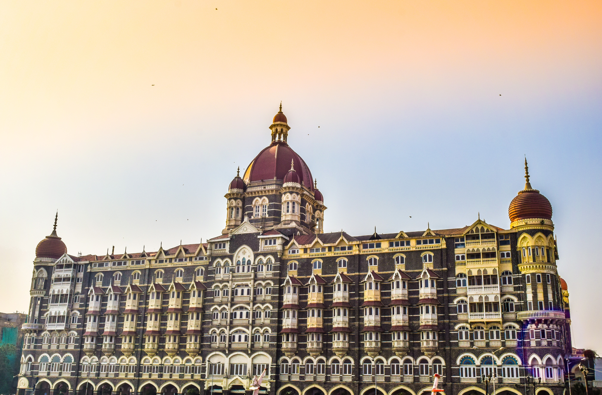
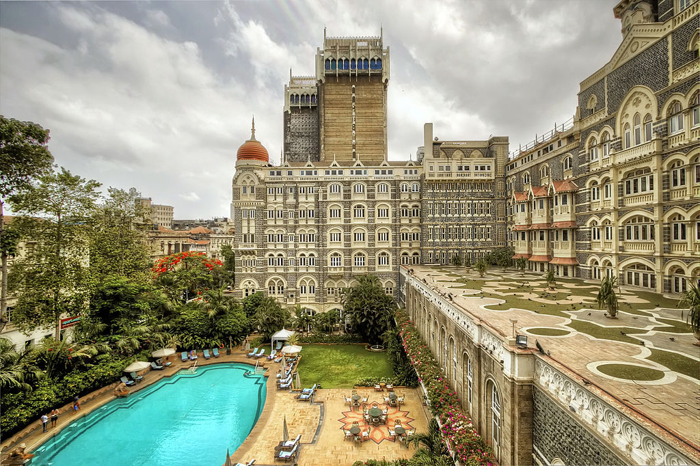

THE TAJ HOTEL
The hotel's original building was commissioned by Tata and first opened its doors to guests on 16 December 1903.
It is widely believed that Jamsetji Tata decided to build the hotel after he was refused entry to one of the city's grand hotels of the time, Watson's Hotel, as it was restricted to "whites only". However, this story has been challenged by some commentators that suggest that Tata was unlikely to have been concerned with 'revenge' against his British adversaries. Instead, they suggest that the Taj was built at the urging of editor of The Times of India who felt a hotel "worthy of Bombay" was needed
The original Indian architects were Sitaram Khanderao Vaidya and D. N. Mirza, and the project was completed by an English engineer, W. A. Chambers. The builder was Khansaheb Sorabji Ruttonji Contractor who also designed and built its famous central floating staircase. The cost of construction was £250,000 (£127 million in 2008 prices)
Originally the main entrance was on the other side, where now the pool exists, and the ocean was at the back, although it is now always viewed and photographed from the ocean side.
Between 1915 and 1919, work proceeded at Apollo Bundar to reclaim the land behind the hotel where the Gateway of India was built in 1924. Gateway of India soon became a major focal point in Bombay.
The original clientele were mainly the Europeans, the Maharajas and the elites. Many world-renowned personalities have since stayed there, from Somerset Maugham and Duke Ellington to Lord Mountbatten and Bill Clinton.
When it opened in 1903, the hotel was the first in India to have: electricity, American fans, German elevators, Turkish baths and English butlers. Later it also had the city’s first licensed bar, India’s first all-day restaurant, and the India’s first discotheque, Blow Up.
Initially in 1903, it charged Rs 13 for rooms with fans and attached bathrooms, and Rs 20 with full board.
During World War I the hotel was converted into a hospital with 600 beds.
Jinnah's estranged wife Ratanbai Petit lived here during her last days in 1929 (her mother belonged to the Tata family).By 1966, the building was run-down, perhaps as a results of losing the British customers in 1948.The Taj Hotel was home to legendary Jazz musician Micky Correa, "The Sultan of Swing" from 1936-1960.The Taj Mahal Tower, an additional wing of the hotel, was opened in 1973.It was designed by Melton Bekker.[19] Also in 1970s Taj Hotels Resorts and Palaces was organized that built new properties and converted palaces into heritage hotels. In 1980, it expanded overseas.
The hotel received extensive international exposure in 2008 and reopened after extensive repairs.

